home / 2015.08.27 15:15 /java /apache poi
I just had to do something at work that I already knew I was going to hate: export some data to an Excel file and the file should also contain a chart based on that data. I knew I was going to hate this because I’ve worked on manipulating Excel files from Java before and it’s not easy. The good news is I figured it out and managed to keep my sanity.
I’ve used Apache POI (version 3.11-beta2), as far as I was able to find it’s the only free option for manipulating Excel files from Java. Here are the maven dependencies:
<dependency>
<groupId>org.apache.poi</groupId>
<artifactId>poi</artifactId>
<version>3.11-beta2</version>
</dependency>
<dependency>
<groupId>org.apache.poi</groupId>
<artifactId>poi-ooxml</artifactId>
<version>3.11-beta2</version>
</dependency>
Writing data to an excel file, with multiple sheets, is easy enough. I’ve quickly set up a test to verify this:
@Test
public void exportTwoSheets() throws Exception {
HSSFWorkbook workbook = new HSSFWorkbook();
HSSFSheet sheet1 = workbook.createSheet("sheet name 1");
writeToSheet(mockStringData(), sheet1);
HSSFSheet sheet2 = workbook.createSheet("sheet name 2");
writeToSheet(mockStringData(), sheet2);
File file = new File("testTwoSheets.xls");
FileOutputStream fileOutputStream = new FileOutputStream(file);
workbook.write(fileOutputStream);
fileOutputStream.close();
}
private List<List<String>> mockStringData() {
List<List<String>> data = new ArrayList<List<String>>();
data.add(Arrays.asList(new String[] {"column 1", "column 2", "column 3"}));
data.add(Arrays.asList(new String[] {"value 1 1", "value 1 2", "value 1 3"}));
data.add(Arrays.asList(new String[] {"value 2 1", "value 2 2", "value 2 3"}));
data.add(Arrays.asList(new String[] {"value 3 1", "value 3 2", "value 3 3"}));
return data;
}
I’ll also add this here for future reference, a test that exports an excel sheet with a function:
@Test
public void exportFunction() throws Exception {
HSSFWorkbook workbook = new HSSFWorkbook();
HSSFSheet sheet = workbook.createSheet();
String[] names = new String[] {"name1", "name2", "name3"};
Integer[] values = new Integer[] {1, 2, 3};
for (int index = 0; index < names.length; index++) {
HSSFRow row = sheet.createRow(index);
HSSFCell nameCell = row.createCell(0);
nameCell.setCellType(Cell.CELL_TYPE_STRING);
nameCell.setCellValue(names[index]);
HSSFCell valueCell = row.createCell(1);
valueCell.setCellType(Cell.CELL_TYPE_NUMERIC);
valueCell.setCellValue(values[index]);
}
HSSFRow formulaRow = sheet.createRow(names.length);
HSSFCell formulaCell = formulaRow.createCell(1);
formulaCell.setCellValue(Cell.CELL_TYPE_FORMULA);
formulaCell.setCellFormula("SUM(B1:B3)");
File file = new File("testFormula.xls");
FileOutputStream fileOutputStream = new FileOutputStream(file);
workbook.write(fileOutputStream);
fileOutputStream.close();
}
Next I had to create a chart based on the data I am writing to the excel file. I’ve read around a bit and the following three were my options:
The first one sounded like the most elegant option. Apache POI supports chart creation, as long as it is a line (see how to create a line chart with Apache POI) or a scatter chart (see how to create a scatter chart with Apache POI). But I wanted to create a bar chart. Exactly…
The second option I did not even explore. There are resources on how to do that, but if you’re doing that there is no point of exporting an Excel file, you can just export the data and the chart in a PDF. The Excel file is dynamic, you send it to your users and they can modify the data and see how different values would affect the chart. I moved on to the third option.
To make the template approach work, we need to go through the following steps:
A very elegant way to do this would be to use the table feature in Excel (create dynamic charts in Excel using the table feature). That doesn’t work in Apache POI. Opening the template file with Apache POI will break the table feature and the chart based on the table. You can insert your data, but neither the table nor the chart will be updated.
What is left is using dynamic series (create dynamic charts in Excel using dynamic series). I’ll walk you through the steps of making this work in the tutorial section.
First, create your file and the structure of you data sheet. Enter the name of the sheet, then write a title and your table header.
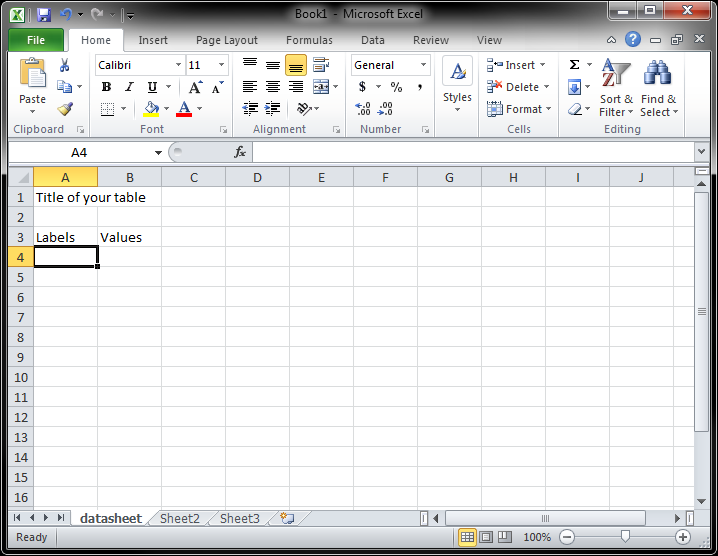
Enter some dummy data.
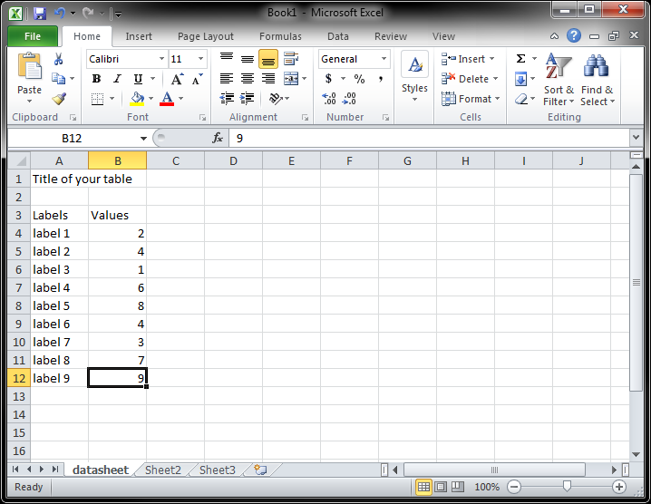
Define the dynamic series you are going to use in the chart (go to Formulas, Name Manager).
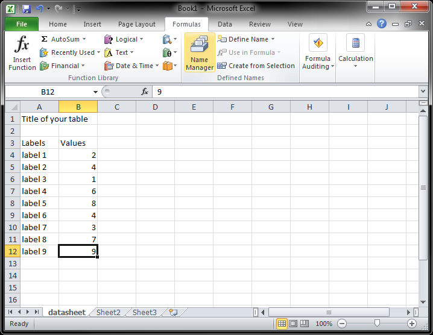 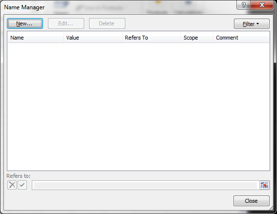 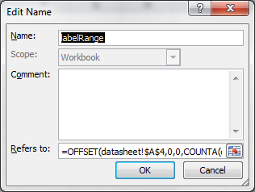
The formulas are (the difference is because the title gets counted for column A):
labelRange=OFFSET(datasheet!$A$4,0,0,COUNTA(datasheet!$A:$A)-2)
valueRange=OFFSET(datasheet!$B$4,0,0,COUNTA(datasheet!$B:$B)-1)
Verify the formulas are good.
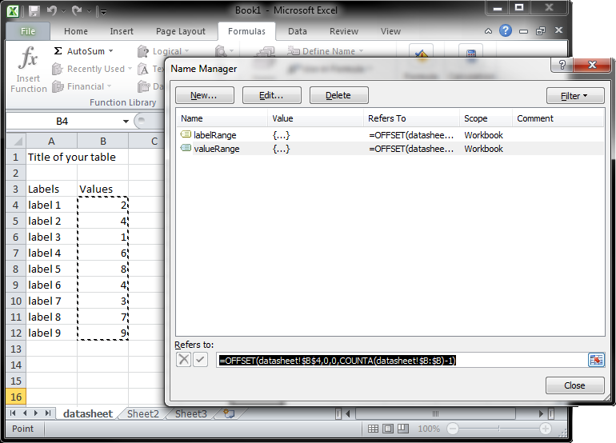
Create a chart based on your data.
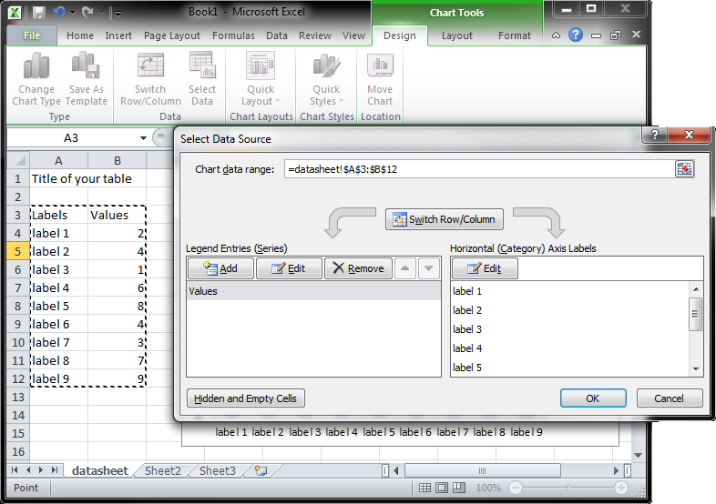 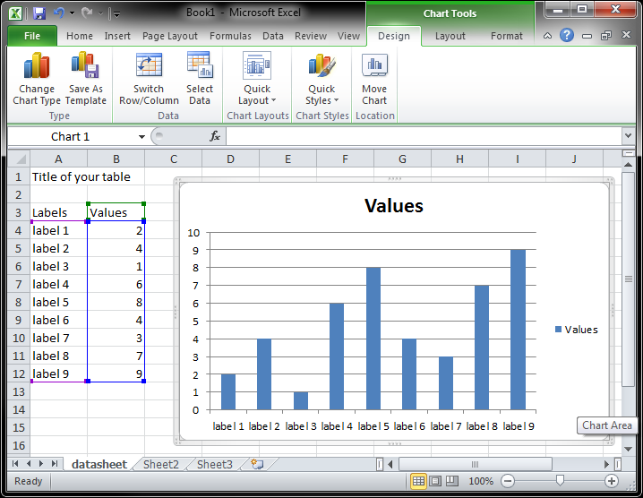
Replace chart data with dynamic series names.
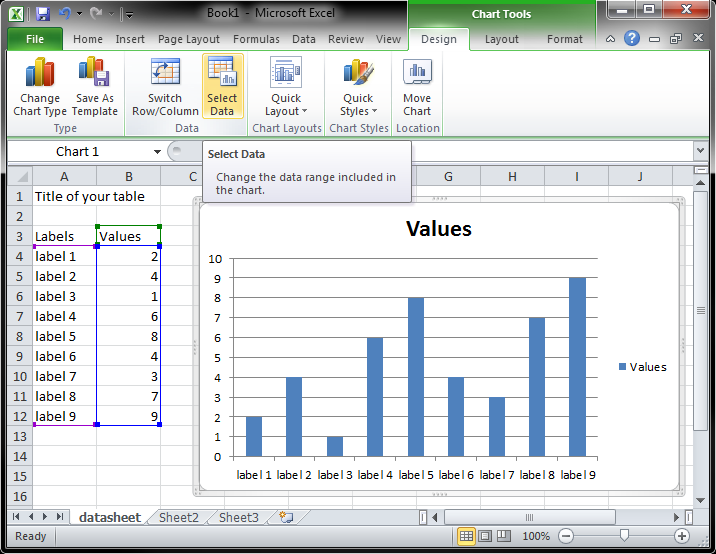 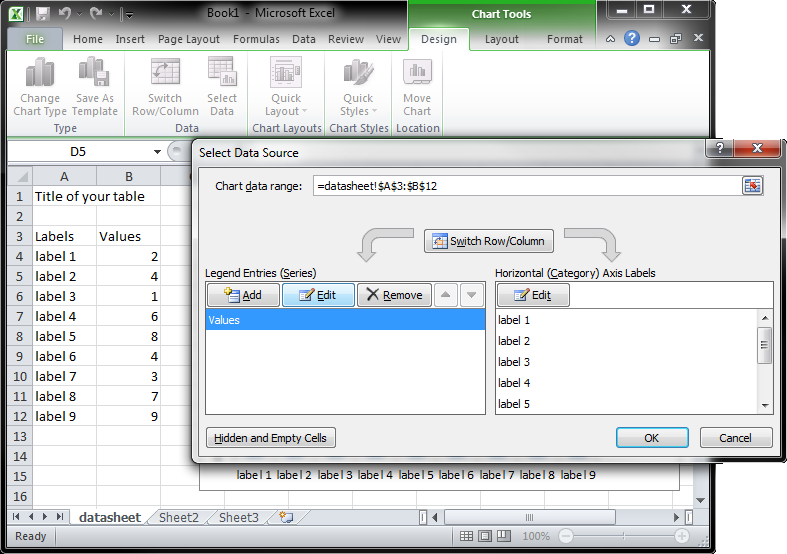 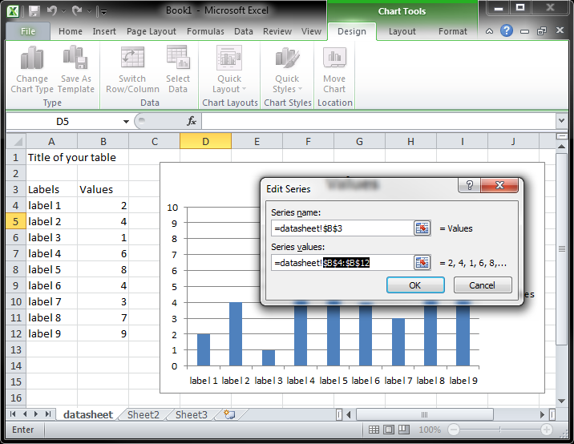 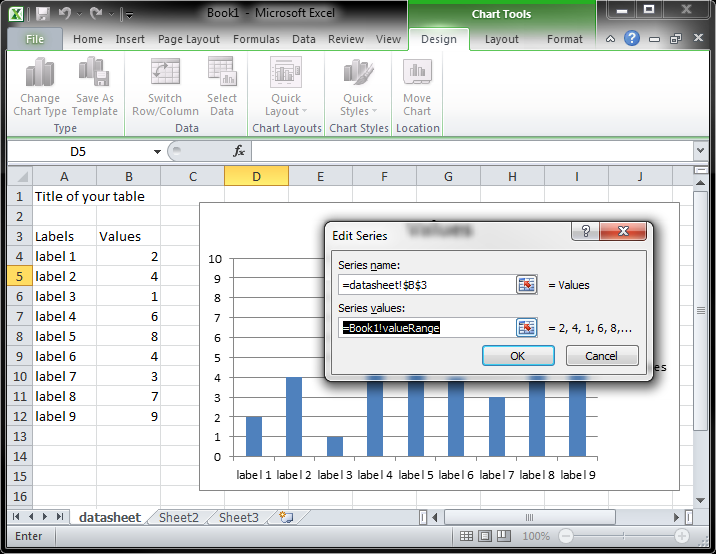 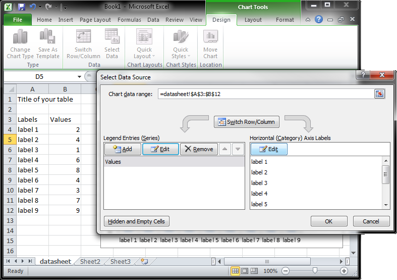 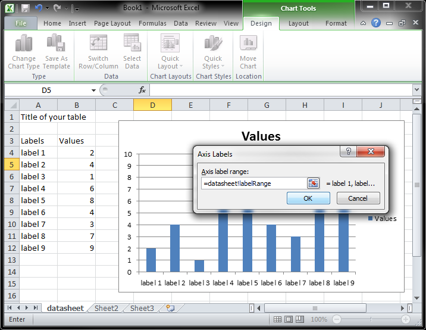
When you add new labels and values, they should show up in the chart.
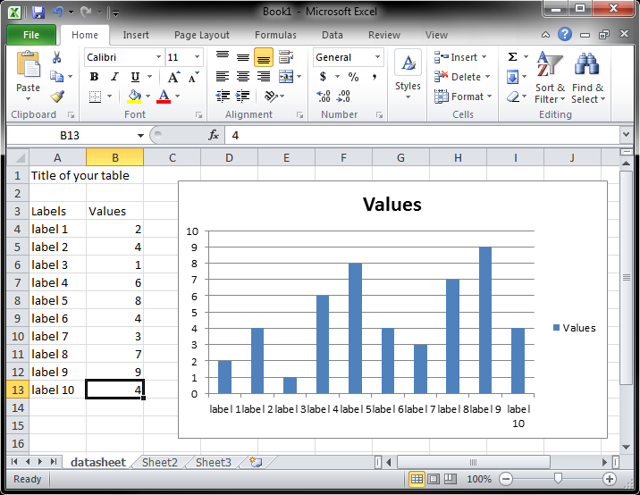
Move the chart to a separate sheet.
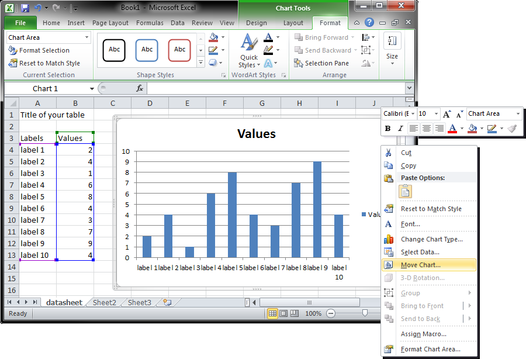 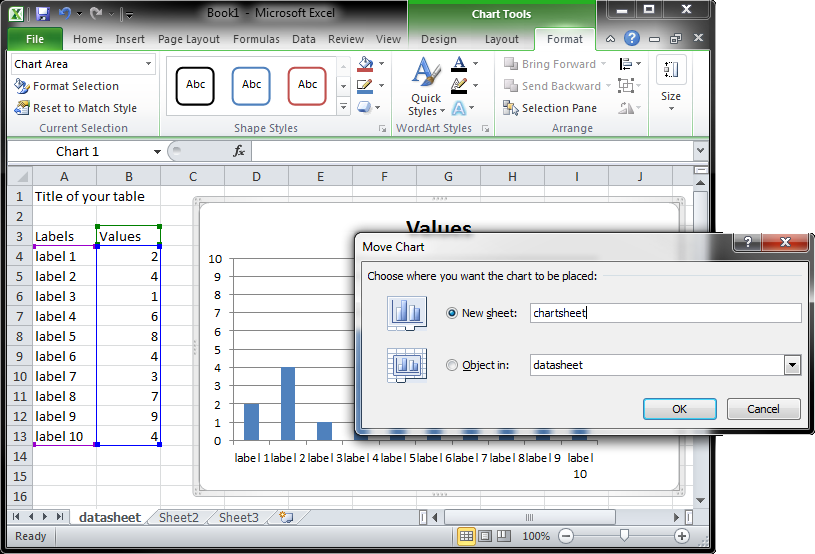 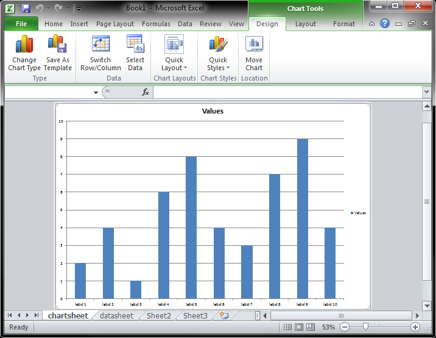
Remove dummy data.
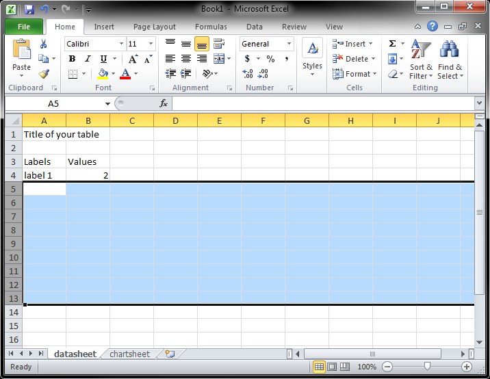
Save the template.
The java code that writes data in the template:
@Test
public void writeSimpleTemplate() throws Exception {
XSSFWorkbook wb = new XSSFWorkbook(OPCPackage.open("simpleTemplate.xlsx"));
XSSFSheet sheet = wb.getSheetAt(0);
sheet.createRow(3).createCell(0).setCellValue((new Date()).toString());
sheet.getRow(3).createCell(1).setCellValue(1);
sheet.createRow(4).createCell(0).setCellValue((new Date()).toString());
sheet.getRow(4).createCell(1).setCellValue(3);
sheet.createRow(5).createCell(0).setCellValue((new Date()).toString());
sheet.getRow(5).createCell(1).setCellValue(8);
FileOutputStream fileOut = new FileOutputStream("testSimpleTemplate.xlsx");
wb.write(fileOut);
fileOut.close();
}
The result.
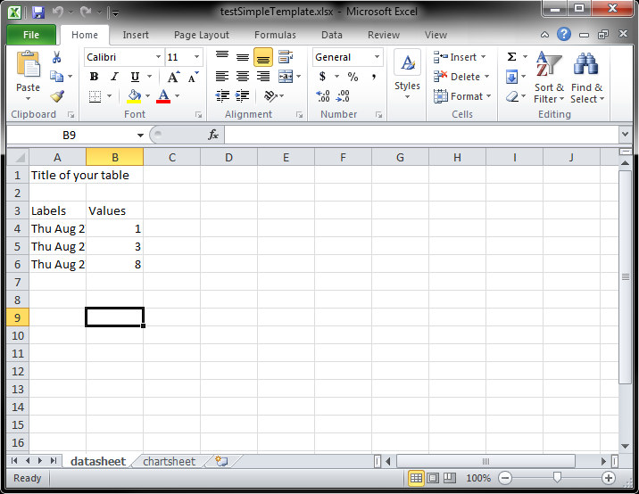 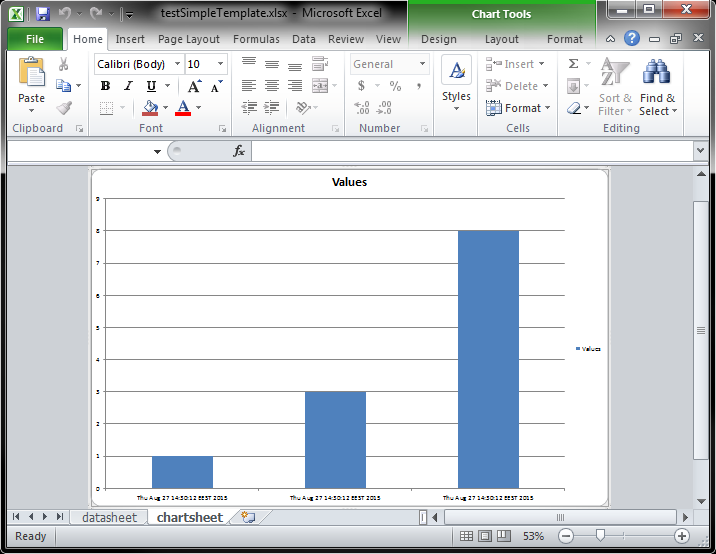